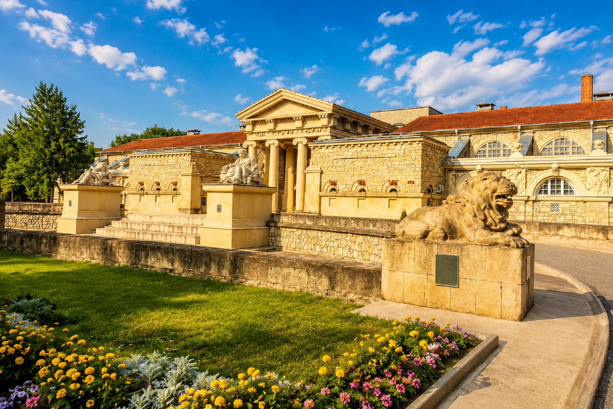
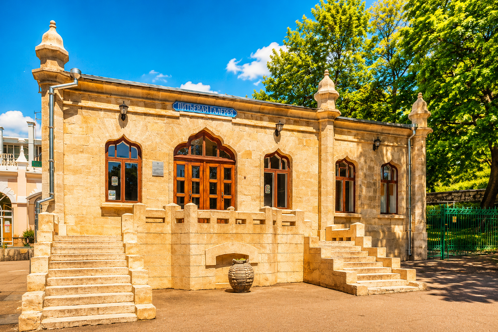
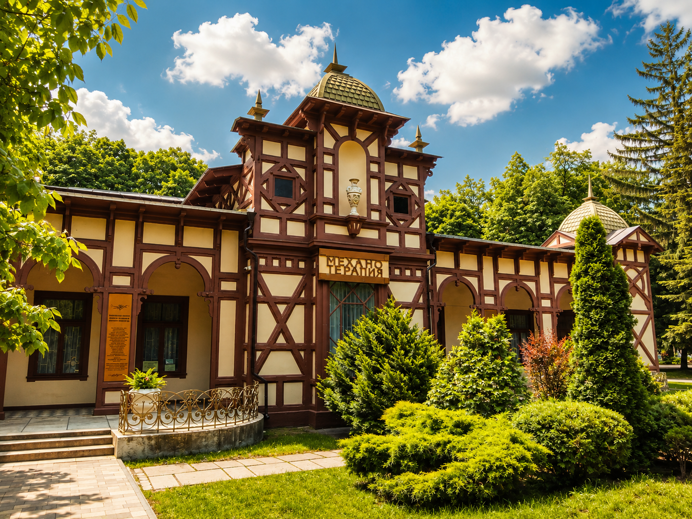
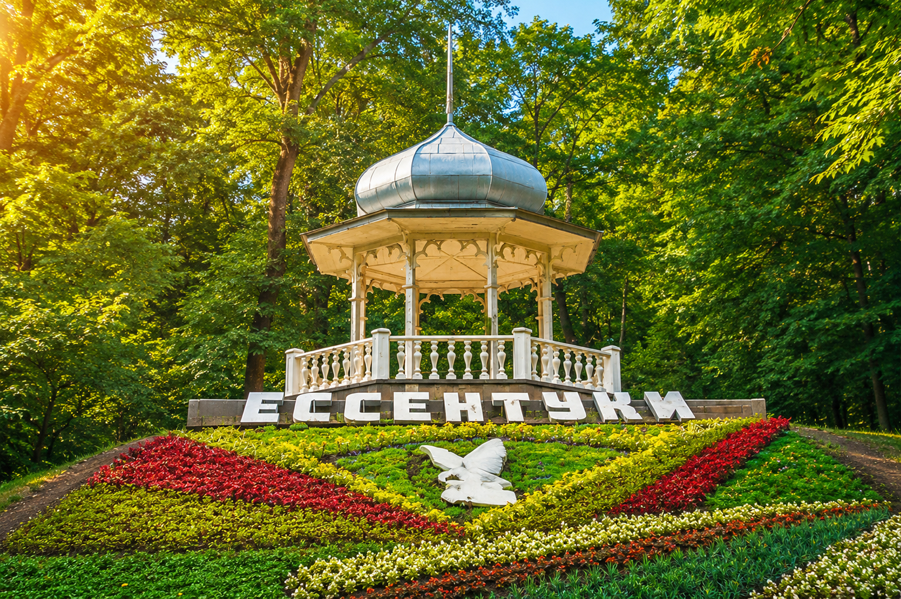

Ессентуки спокойнее соседних городов КМВ, и в этом их сила. Здесь важны не быстрые маршруты, а фактура: галереи, тенистые аллеи, старые павильоны и лечебная традиция.

Кавказские Минеральные Воды
Ессентуки — город источников и старого курортного ритма
Минеральная вода, парк и архитектура, в которой слышна история
Кратко о городе
Ессентуки раскрываются через детали
Город подходит для размеренной прогулки, красивых фотографий и знакомства с настоящей курортной культурой Кавказских Минеральных Вод.
Достопримечательности
Главные места: Ессентуки
01
Грязелечебница Семашко
Монументальное здание, похожее на античный дворец. Это одна из самых выразительных архитектурных точек КМВ и символ лечебной истории города.

02
Источник №17
Главный минеральный символ Ессентуков. Галерея сохраняет атмосферу классического курорта, где прогулка и вода становятся частью ежедневного ритуала.

03
Институт механотерапии
Редкое историческое место с необычной механикой и медицинской эстетикой прошлого века. Оно добавляет маршруту характер и глубину.

04
Курортный парк
Тенистые дорожки, павильоны и спокойный ритм. Парк хорошо показывает город без спешки, особенно утром или ближе к закату.

05
Музыкальная беседка
Легкая парковая архитектура, которая напоминает о времени, когда курортная прогулка была главным городским событием дня.
Атмосфера города
Ессентуки в ритме старого курорта
Утренний парк
Утро здесь тихое и светлое: парк наполняется воздухом, а город будто говорит вполголоса.
Источники
Источники задают городу смысл и темп. Это не достопримечательность для галочки, а настоящая часть местной жизни.
Архитектура лечения
Семашко делает страницу города почти театральной: строгие линии, масштаб и ощущение большого курортного прошлого.
Тихий вечер
К вечеру город становится мягче: свет ложится на аллеи, и обычная прогулка превращается в спокойную сцену.
Город в деталях
Что полезно знать перед поездкой
Мягкий степной климат с теплым летом и комфортной весной.
Около 640 метров над уровнем моря.
Парки, аллеи и открытые виды на линию КМВ.
Один из ключевых лечебных курортов России.
Ессентуки №4 и №17 сделали город известным далеко за пределами Кавказа.
Комфортнее всего весной, в начале лета и осенью.
Ессентуки не спешат впечатлять. Они остаются в памяти спокойствием.